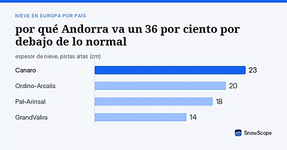

Parte de nieve Andorra: espesor, nieve nueva y próximos días
En Andorra hoy unos 370 km² de relieve están blancos, el 84 % de las montañas y colinas cartografiadas del país. Es más o menos como ayer. La estación con más nieve es Canaro, con 23 cm en la parte alta. Hasta 3 cm de nieve nueva podrían caer en las laderas más nevadas esta semana.
Consulta la previsión de nieve en tiempo real de Canaro en la app SnowScopeEspesor de nieve, alertas de nieve polvo y mapa 3D, gratis.Hoy de un vistazo
| Superficie blanca | 370 km² |
|---|---|
| Parte del relieve | 84 % |
| Máx. nieve nueva en 24 h | 0 cm |
| Máx. nieve nueva en 3 días | 18 cm |
| Próximos 3 días (laderas más nevadas) | 1 cm |
| Próximos 7 días | 3 cm |
| Mayormente blanco desde | 1600 m |
| Estaciones con nieve arriba | 4 de 4 |
Los últimos siete días
El 21 de noviembre había unos 20 km² blancos; hoy 370 km².
La cubierta creció 350 km² en estos días.
La mayor nevada de tres días del periodo llegó a 20 cm (al 26 de noviembre).
Esta temporada frente a un año normal
0 de las 4 estaciones con más nieve están por encima de su espesor habitual para el 27 de noviembre.
Canaro: 7 cm a unos 2108 m, un año normal tiene 11 cm; Ordino-Arcalis: 12 cm a unos 2284 m, un año normal tiene 13 cm; Pal-Arinsal: 8 cm a unos 2024 m, un año normal tiene 9 cm; GrandValira: 7 cm a unos 2146 m, un año normal tiene 8 cm.
Estos espesores son para una cota de cada montaña, por debajo de la cima.
En inviernos pasados la mejor nieve en Canaro solía llegar a mediados de febrero / finales de febrero.
Las estaciones con más nieve hoy
Canaro va en cabeza con 23 cm en la parte alta.
Le siguen Ordino-Arcalis (20 cm), Pal-Arinsal (18 cm) y GrandValira (14 cm).
| Estación | Parte alta | Nueva, 3 días | Próximos 3 días | Cima |
|---|---|---|---|---|
| Canaro | 23 cm | 16 cm | 1 cm | 2500 m |
| Ordino-Arcalis | 20 cm | 20 cm | 2 cm | 2626 m |
| Pal-Arinsal | 18 cm | 15 cm | 1 cm | 2494 m |
| GrandValira | 14 cm | 15 cm | 1 cm | 2619 m |
Dónde llega la nieve
Se esperan hasta 1 cm en las laderas más nevadas en los próximos tres días, y hasta 3 cm en la semana.
En los últimos tres días la nieve nueva cayó sobre todo en Pirineu andorrà.
La segunda semana podría sumar hasta 18 cm donde más nieva.
La nieve según la altitud
Cota a cota: 1000-1500 m: 0 cm de media, 6 % blanco; 1500-2000 m: 4 cm de media, 86 % blanco; 2000-2500 m: 9 cm de media, 100 % blanco; por encima de 2500 m: 10 cm de media, 100 % blanco.
El suelo está mayormente blanco desde unos 1600 m.
Planear una escapada
Por encima de 1500 m el suelo está casi todo blanco (86 % cubierto): allí las pistas tienen una base continua.
Las estaciones con los remontes más altos son la apuesta más segura: Ordino-Arcalis (2626 m), GrandValira (2619 m) y Canaro (2500 m).
Se espera poca nieve nueva en los próximos tres días: la situación de hoy debería mantenerse para un fin de semana.
Día a día
- viernes 27 de noviembre · 370 km² blancos, hasta 18 cm de nieve nueva en tres días, en cabeza Canaro (23 cm) · Canaro tiene 23 cm: por qué Andorra va un 36 por ciento por debajo de lo normal
- jueves 26 de noviembre · 400 km² blancos, hasta 20 cm de nieve nueva en tres días, en cabeza Ordino-Arcalis (25 cm)
- miércoles 25 de noviembre · 420 km² blancos, hasta 12 cm de nieve nueva en tres días, en cabeza Canaro (21 cm)
- martes 24 de noviembre · 270 km² blancos, hasta 6 cm de nieve nueva en tres días, en cabeza Canaro (13 cm)
- lunes 23 de noviembre · 60 km² blancos, hasta 4 cm de nieve nueva en tres días, en cabeza Canaro (21 cm)
- domingo 22 de noviembre · 130 km² blancos, hasta 4 cm de nieve nueva en tres días, en cabeza Canaro (13 cm)
- sábado 21 de noviembre · 20 km² blancos, hasta 4 cm de nieve nueva en tres días, en cabeza Canaro (15 cm)
Preguntas y respuestas
¿Hay nieve en Andorra ahora?
Solo un poco: unos 370 km² de relieve están blancos, sobre todo en las cumbres más altas. La estación con más nieve es Canaro, con 23 cm en la parte alta.
¿Dónde hay más nieve en Andorra hoy?
Canaro va en cabeza con 23 cm en la parte alta. Le siguen Ordino-Arcalis (20 cm), Pal-Arinsal (18 cm) y GrandValira (14 cm).
¿Nevará en Andorra esta semana?
Se esperan hasta 1 cm en las laderas más nevadas en los próximos tres días, y hasta 3 cm en la semana. En los últimos tres días la nieve nueva cayó sobre todo en Pirineu andorrà.
¿A partir de qué altura hay nieve en Andorra?
El suelo está mayormente blanco desde unos 1600 m.
¿Cuánta nieve nueva cayó en Andorra en los últimos tres días?
Hasta 18 cm en las laderas más nevadas, 0 cm de ellos en las últimas 24 horas. Al menos 5 cm cayeron sobre unos 370 km². En los últimos tres días la nieve nueva cayó sobre todo en Pirineu andorrà.
¿Cuántas estaciones en Andorra tienen nieve?
4 de las 4 estaciones que seguimos tienen hoy nieve arriba. Nieve arriba no significa remontes abiertos: consulta antes de ir.
¿Cuál es la mejor época para esquiar en Andorra?
En inviernos pasados la mejor nieve en Canaro solía llegar a mediados de febrero / finales de febrero.
¿Ha empezado bien la temporada en Andorra?
0 de las 4 estaciones con más nieve están por encima de su espesor habitual para el 27 de noviembre.
Artículos sobre Andorra

Canaro, la estación más alta de Andorra, tiene 23 cm hoy, muy por debajo de los 36 cm típicos de finales de noviembre. La nieve fresca de los últimos tres días ha ayudado, pero la temporada comenzó tarde.

Nieve en Andorra el 17 de noviembre: manto de nieve, nieve nueva, espesor por altitud, próximos días y mejores estaciones.

El 16 de noviembre, Andorra tiene cobertura de nieve solo en el 2 % de su territorio mientras que Francia alcanza el 11 %; la diferencia refleja patrones otoñales, con nevadas más profundas pronosticadas la próxima semana.